| Przedmiot | Algorytmy metaheurystyczne |
|---|---|
| Prowadzący | Dr inż. Radosław Idzikowski |
| Autorzy | Maciej Bazela (261743) Hubert Gruda (261734) |
| Grupa | Czwartek 13:15-15:00 |
| Kod grupy | K03-66p |
| Język | Julia |
Etap 2 polegał na implementacji przeszukiwania z zabronieniami (Tabu Search) dla problemu komiwojażera oraz zbadaniu jego niektórych własności (czas działania, PRD).
Implementacja Tabu Searcha znajduje się w: ./tabuSearch.jl.
Badania przeprowadziliśmy na bibliotece TSPLIB, która zawiera przykładowe dane dla symetrycznego problemu komiwojażera, oraz na losowo generowanych grafach.
Funkcje generujące grafy o symetrycznych (euklidesowych) i asymetrycznych (losowych) wagach znajdują się w pliku generate.jl.
Badania przeproawdziliśmy na takich samych instancjach TSPLIB jak w etapie 1 oraz na losowo generowanych danych (dla wag euklidesowych).
Badania polegały na uruchomieniu Tabu Searcha dla danych parametrów, zbadanie czasu działania dla zadanej liczby iteracji (nie testowaliśmy kryterium stopu w postaci czasu działania), najlepszej wartości funkcji celu oraz PRD dla danego problemu.
Aby Tabu Search działał optymalnie, musieliśmy go najpierw "nastroić" (dobrać odpowiednie parametry).
W naszym przypadku strojenie polegało na włączaniu heurystyki dla zadanych parametrów, porównaniu wartości PRD i wybranie najlepszych parametrów dla przyszłych testów.
Po kolei testowaliśmy:
Wszystkie badania uruchamiane są z programu ./main.jl przy pomocy odpowiednio dobranych argumentów w linii komend (więcej informacji znajduje się w pliku).
Dla ułatwienia, przygotowaliśmy skrypty w bashu (./tests.sh, ./2nd-tests.sh), które uruchamiają po kolei powyższe badania strojeniowe.
Kiedy wyznaczyliśmy optymalne parametry dla naszej heurystyki porównaliśmy ją z poprzednio zaimplementowanymi heurystykami, które badaliśmy podczas etapu 1 (2-opt, nearest neighbour, repetitive nearest neighbour, k-random).
Wyniki testów algorithmsTest oraz randomGraphsTest zapisywaliśmy do formatu .json w folderze ./results/jsons.
Pliki wynikowe zawierają wartości podanych wyżej statystyk (czas, prd, najlepsza wartość funkcji celu) rozdzielone według ilości węzłów dla zadanego problemu.
Dla wygenerowanych wyników napisaliśmy program, który sczytuje pliki .json i dla podanych algorytmów tworzy ich wykresy.
Kod źródłowy można znaleźć w pliku ./tests/plotting.jl.
Dla wyników z folderu ./results/jsons wygenerowaliśmy wykresy dla każdego algorytmu. Znajdują się one w folderze ./results/plots.
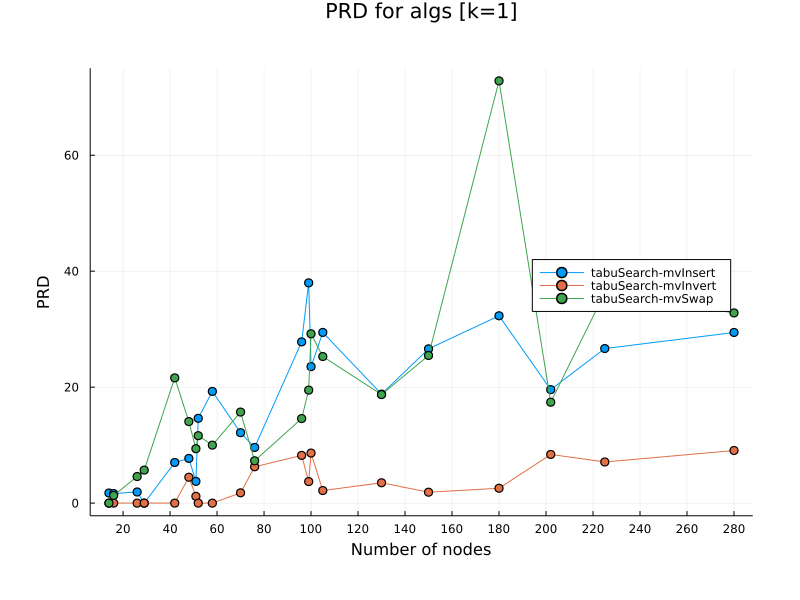
Jak widzimy, ruch typu invert druzgocąco polepsza znajdywane rozwiązania.
Rozwiązania znajdywane przy użyciu ruchu invert są bliskie rozwiązaniom optymalnym.
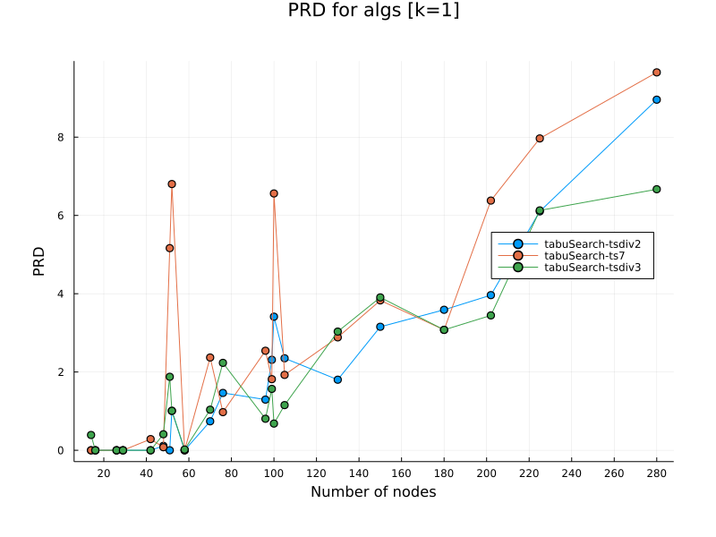
W przypadku TSPLIB wielkość listy tabu powinna być liniowo uzależniona od wielkości zadanego problemu. Dlatego dla reszty badań przyjęliśmy, że wielkość listy tabu równa się połowie liczby węzłów w danym problemie.
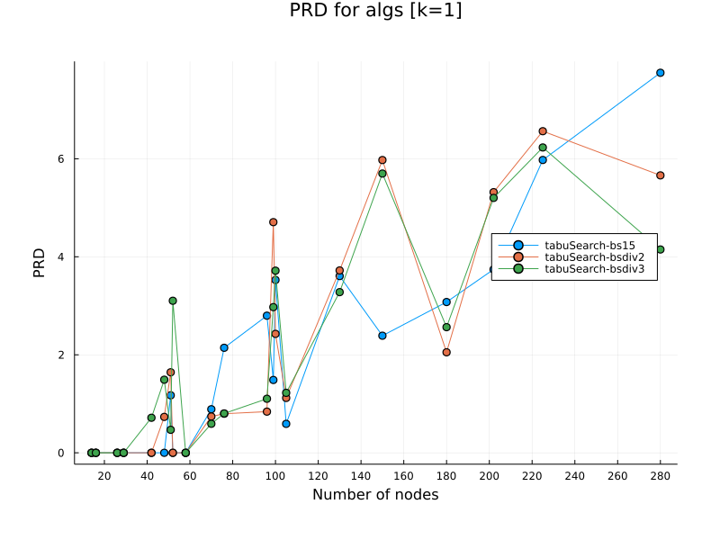
Tak samo jak w przypadku wielkości listy tabu, wielkość pamięci długoterminowej powinna być uzależniona liniowo od ilości węzłów danego problemu. Tutaj także przyjęliśmy, że backtrack_size = liczba_węzłów / 2.
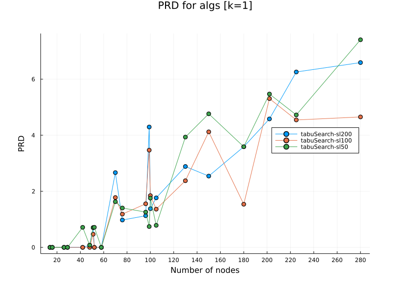
Limit liczby iteracji, które nie poprawiają nam dotychczasowego rozwiązania ustawialiśmy w zależności od liczby badanych iteracji. Dla każdego wybranego problemu z TSPLIB wybieraliśmy kolejno jako limit stagnacji w 5%, 10% albo 20% liczby wszystkich iteracji (np. dla 1000 iteracji, mielibyśmy kolejno: 50 iteracji, 100 iteracji i 200 iteracji zanim uznamy, że wykryliśmy stagnację).
Dla 10% wszystkich iteracji osiagaliśmy najlepsze PRD.
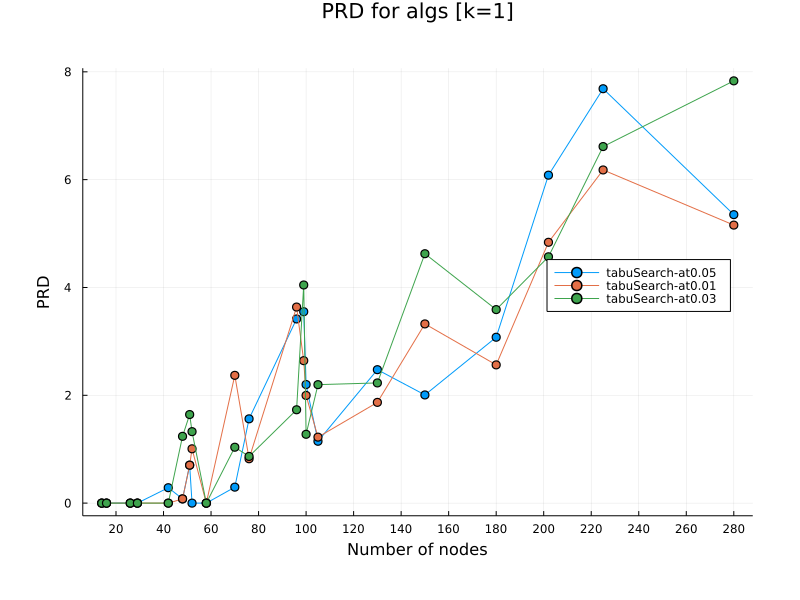
Nasze kryterium aspiracji polegało na sprawdzaniu, czy wybrany zabroniony ruch nie polepsza nam dotychczasowego najlepszego rozwiązania z jakimś marginesem błędu.
Margines ten określaliśmy jako aspiration_threshold, który jest floatem od 0.0 do 1.0.
Np. dla aspiration_threshold = 0.05 dopuszczaliśmy rozwiąznia, które są lepsze od (1-0.05) * the_bestest_distance, czyli te, które są maksymalnie o 5% gorsze od dotychczasowego.
Przyjęliśmy 3 różne warianty odchylenia: 1%, 3%, 5%.
Dla 1% mechanizm aspiracji zachowywał się najlepiej.
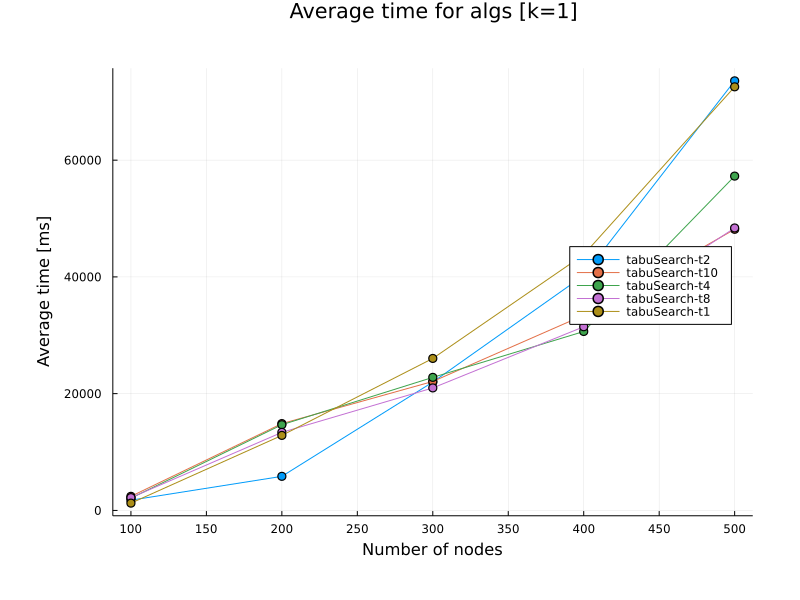
Zbadaliśmy od jakiego momentu opłaca się zrównoleglać badanie przeszukiwanie sąsiedstwa w tabu search.
Dla małych instancji nie ma to sensu, ponieważ nasz kod jest na tyle zoptymalizowany, że włączenie i usypianie wątków wydłuża czas, zamiast go skracać.
Na wykresie możemy zobaczyć, że dla problemów mających około 300 węzłów zaczynamy odczuwać realną różnicę w czasie działania naszej heurystyki.
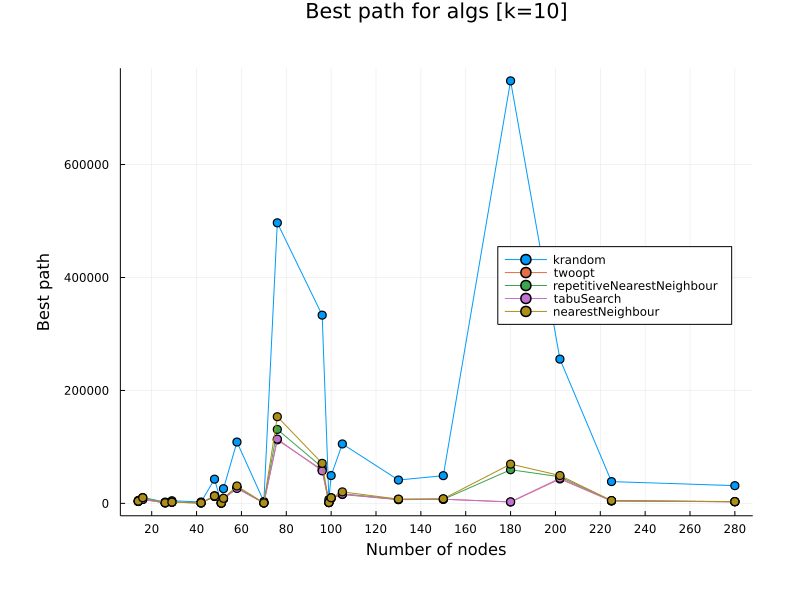
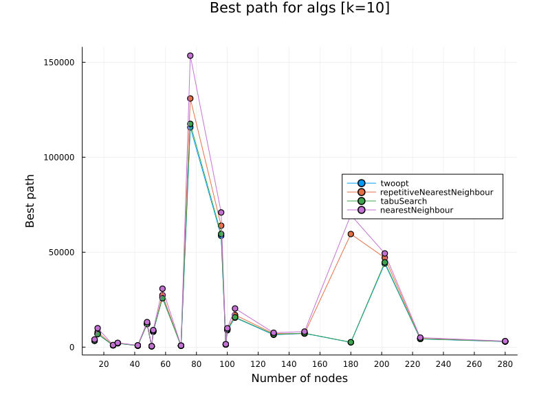
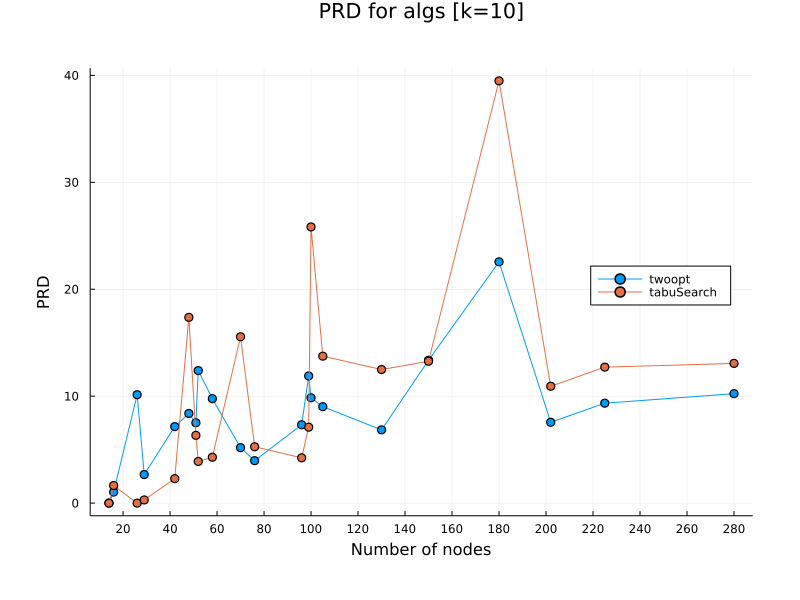
Tabu serach jest jedną z najlepszych heurystyk dla problemów z TSPLIB, chociaż, jak możemy zauważyć, nie zawsze poprawia on rozwiązania względem 2-opt.
Jako rozwiązanie startowe przyjmowaliśmy zawsze ścieżkę z 2-opt i możliwe, że liczba iteracji była zbyt mała, zanim dotarliśmy do rzeczywiście dużo lepszych rozwiązań.
Wyniki prezentują się dużo lepiej dla losowych instancji problemu TSP.
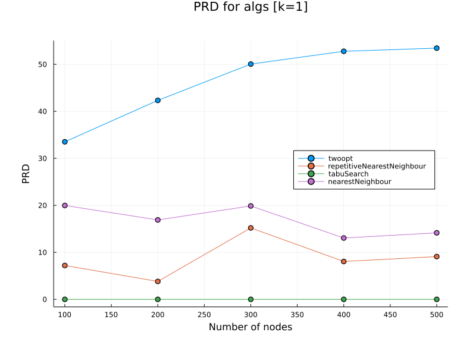
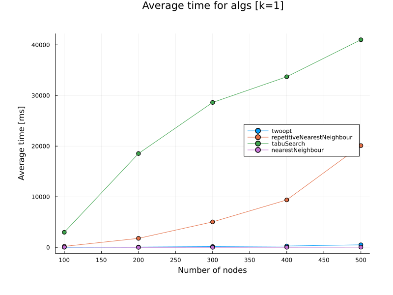
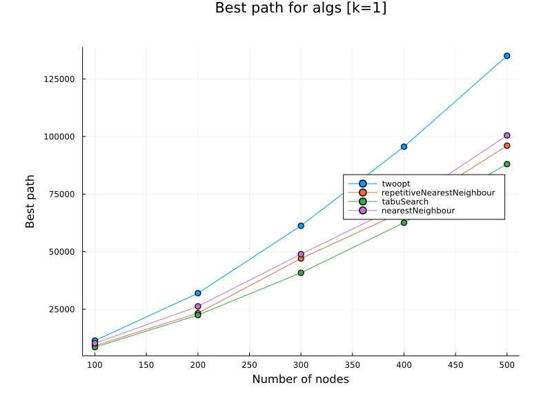
Tabu search znajduje najlepsze rozwiązania dla losowych instancji, przebijając wszystkie poprzednie heurystyki.
Niestety dzieję się to wszystko kosztem czasu działania. Tabu Search jest najwolniejszy z wszystkich heurystyk.